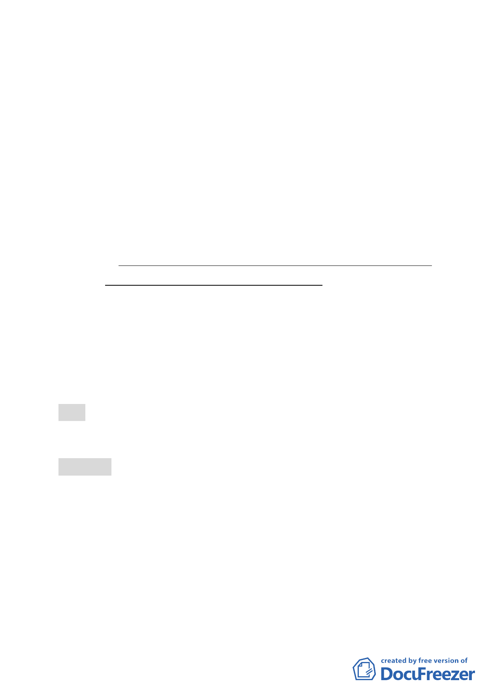

計畫為基準，故區內之九個「2010年臺北好好看」申請案
應以本區92年公告之都市計畫為基準。
（二）「2010年臺北好好看」申請案之「容積放寬」部分，上限
仍維持50％（含容積移轉），而其中容積移轉量則以20％
為上限。
（三）大彎北段地區係屬「2010年臺北好好看」之科技產業軸帶，
基於其規劃理念係為提供產業進駐誘因、帶動城市發展活
力，故區內「2010年臺北好好看」申請案之「土地使用」
部分，其因申請好好看所獲容積獎勵部分同意得比照商三
所允許之使用項目，惟不得作住宅之使用；至於其餘部分
仍應依本區92年都市計畫之規定辦理，不得作住宅之使用
（本項內容係委員會採不記名投票方式表決，經開票統
計，不包括主席，贊成13票，反對3票）。
二、基於上述決議，請修正計畫書相關內容外，並請「臺北市都
市設計及土地使用開發許可審議委員會」就建築使用設計儘
速完成預審，並請專案小組針對「2010年臺北好好看」申請
個案容積獎勵項目與環境貢獻程度以及配套管理機制，再予
審查後提送大會審議。
伍、本次會議因時間已晚，討論事項五至二十五留待下次會議討
論。
陸、散會（18：45）
- 19 -